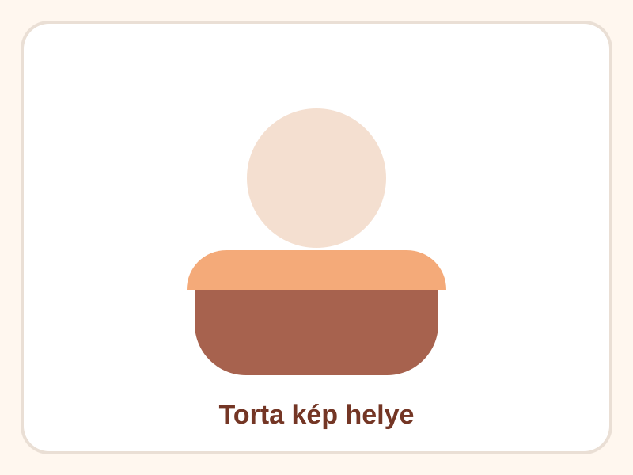

Erdei gyümölcsös álomtorta
12 900 Ft
MeseHab Cukrászda
Készleten
Kiemelt
Budapest
XIII. kerület
Ma 16:00-ig
- Állapot
- keszleten
- Város
- Budapest
- Körzet / kerület
- XIII. kerület
- Átvétel
- Ma 16:00-ig
- Kategória
- Gyümölcsös torta
- Szeletszám
- 12 szelet